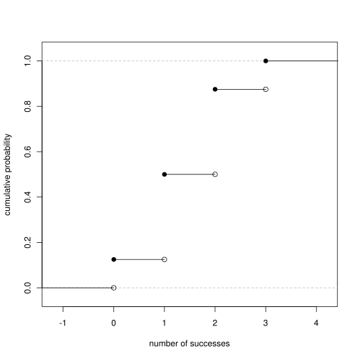
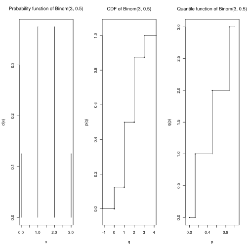
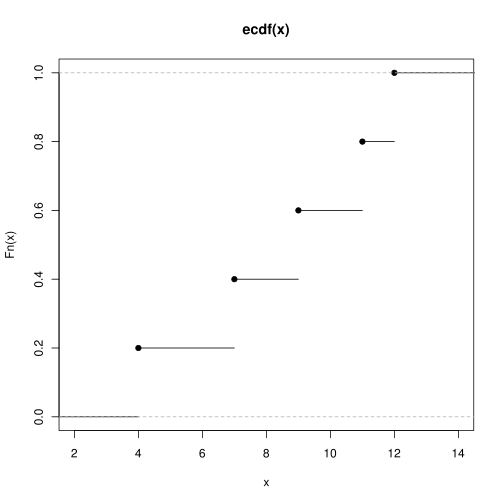

Discrete Distributions
--- layout: chapter title: IPSUR - Discrete Distributions previous: probability.html next: continuous-distributions.html description: This chapter discusses discrete random variables and their probabilistic properties. keywords: discrete random variable R statistics ---Table of Contents
Table of Contents
1 Discrete Distributions
In this chapter we introduce discrete random variables, those who take values in a finite or countably infinite support set. We discuss probability mass functions and some special expectations, namely, the mean, variance and standard deviation. Some of the more important discrete distributions are explored in detail, and the more general concept of expectation is defined, which paves the way for moment generating functions.
We give special attention to the empirical distribution since it plays such a fundamental role with respect to resampling and Chapter resampling-methods; it will also be needed in Section Kolmogorov-Smirnov-Goodness-of-Fit-Test where we discuss the Kolmogorov-Smirnov test. Following this is a section in which we introduce a catalogue of discrete random variables that can be used to model experiments.
There are some comments on simulation, and we mention transformations of random variables in the discrete case. The interested reader who would like to learn more about any of the assorted discrete distributions mentioned here should take a look at Univariate Discrete Distributions by Johnson et al\cite{Johnson1993}.
- What do I want them to know?
- how to choose a reasonable discrete model under a variety of physical circumstances
- item the notion of mathematical expectation, how to calculate it, and basic properties- moment generating functions (yes, I want them to hear about those)
- the general tools of the trade for manipulation of continuous random variables, integration, etc.
- some details on a couple of discrete models, and exposure to a bunch of other ones
- how to make new discrete random variables from old ones
1.1 Discrete Random Variables
1.1.1 Probability Mass Functions
Discrete random variables are characterized by their supports which take the form \begin{equation} S_{X}=\{u_{1},u_{2},\ldots,u_{k}\}\mbox{ or }S_{X}=\{u_{1},u_{2},u_{3}\ldots\}. \end{equation} Every discrete random variable \(X\) has associated with it a probability mass function (PMF) \(f_{X}:S_{X}\to[0,1]\) defined by \begin{equation} f_{X}(x)=\Pr(X=x),\quad x\in S_{X}. \end{equation} Since values of the PMF represent probabilities, we know from Chapter Probability that PMFs enjoy certain properties. In particular, all PMFs satisfy
- \(f_{X}(x)>0\) for \(x\in S\),
- \(\sum_{x\in S}f_{X}(x)=1\), and
- \(\Pr(X\in A)=\sum_{x\in A}f_{X}(x)\), for any event \(A\subset S\).
Toss a coin 3 times. The sample space would be \[ S=\{ HHH,\ HTH,\ THH,\ TTH,\ HHT,\ HTT,\ THT,\ TTT\}. \] Now let \(X\) be the number of Heads observed. Then \(X\) has support \(S_{X}=\{ 0,1,2,3\} \). Assuming that the coin is fair and was tossed in exactly the same way each time, it is not unreasonable to suppose that the outcomes in the sample space are all equally likely.
What is the PMF of \(X\)? Notice that \(X\) is zero exactly when the outcome \(TTT\) occurs, and this event has probability \(1/8\). Therefore, \(f_{X}(0)=1/8\), and the same reasoning shows that \(f_{X}(3)=1/8\). Exactly three outcomes result in \(X=1\), thus, \(f_{X}(1)=3/8\) and \(f_{X}(3)\) holds the remaining \(3/8\) probability (the total is 1). We can represent the PMF with a table:
| \(x\in S_{X}\) | 0 | 1 | 2 | 3 | Total |
|---|---|---|---|---|---|
| \(f_{X}(x)=\Pr(X=x)\) | 1/8 | 3/8 | 3/8 | 1/8 | 1 |
1.1.2 Mean, Variance, and Standard Deviation
There are numbers associated with PMFs. One important example is the mean \(\mu\), also known as \(\mathbb{E} X\) (which we will discuss later): \begin{equation} \mu=\mathbb{E} X=\sum_{x\in S}xf_{X}(x), \end{equation} provided the (potentially infinite) series \(\sum|x|f_{X}(x)\) is convergent. Another important number is the variance: \begin{equation} \sigma^{2}=\sum_{x\in S}(x-\mu)^{2}f_{X}(x), \end{equation} which can be computed (see Exercise variance-shortcut) with the alternate formula \(\sigma^{2}=\sum x{}^{2}f_{X}(x)-\mu^{2}\). Directly defined from the variance is the standard deviation \(\sigma=\sqrt{\sigma^{2}}\).
We will calculate the mean of \(X\) in Example Toss-a-coin. \[ \mu=\sum_{x=0}^{3}xf_{X}(x)=0\cdot\frac{1}{8}+1\cdot\frac{3}{8}+2\cdot\frac{3}{8}+3\cdot\frac{1}{8}=3.5. \] We interpret \(\mu = 3.5\) by reasoning that if we were to repeat the random experiment many times, independently each time, observe many corresponding outcomes of the random variable \(X\), and take the sample mean of the observations, then the calculated value would fall close to 3.5. The approximation would get better as we observe more and more values of \(X\) (another form of the Law of Large Numbers; see Section Interpreting-Probabilities). Another way it is commonly stated is that \(X\) is 3.5 ``on the average'' or ``in the long run''.
Related to the probability mass function \(f_{X}(x)=\Pr(X=x)\) is another important function called the cumulative distribution function (CDF), \(F_{X}\). It is defined by the formula
\begin{equation}
F_{X}(t)=\Pr(X\leq t),\quad-\infty We say that \(X\) has the distribution \(F_{X}\) and we write \(X\sim F_{X}\). In an abuse of notation we will also write \(X\sim f_{X}\) and for the named distributions the PMF or CDF will be identified by the family name instead of the defining formula.
The mean and variance of a discrete random variable is easy to compute at the console. Let's return to Example disc-pmf-mean. We will start by defining a vector
To calculate the mean \(\mu\), we need to multiply the corresponding values of
To compute the variance \(\sigma^{2}\), we subtract the value of
Finally, we may find the values of the CDF \(F_{X}\) on the support by accumulating the probabilities in \(f_{X}\) with the
As easy as this is, it is even easier to do with the
x containing the support of \(X\), and a vector f to contain the values of \(f_{X}\) at the respective outcomes in x:
x <- c(0,1,2,3)
f <- c(1/8, 3/8, 3/8, 1/8)
x and f and add them. This is easily accomplished in \(\mathsf{R}\) since operations on vectors are performed element-wise (see Section Functions-and-Expressions):
mu <- sum(x * f)
mu
[1] 1.5
mu from each entry in x, square the answers, multiply by f,and sum. The standard deviation \(\sigma\) is simply the square root of \(\sigma^{2}\).
sigma2 <- sum((x-mu)^2 * f)
sigma2
[1] 0.75
sigma <- sqrt(sigma2)
sigma
[1] 0.8660254
cumsum function.
F <- cumsum(f)
F
[1] 0.125 0.500 0.875 1.000
distrEx package \cite{Ruckdescheldistr}. We define a random variable X as an object, then compute things from the object such as mean, variance, and standard deviation with the functions E, var, and sd:
library(distrEx)
X <- DiscreteDistribution(supp = 0:3, prob = c(1,3,3,1)/8)
E(X); var(X); sd(X)
[1] 1.5
[1] 0.75
[1] 0.8660254
1.2 The Discrete Uniform Distribution
We have seen the basic building blocks of discrete distributions and we now study particular models that statisticians often encounter in the field. Perhaps the most fundamental of all is the discrete uniform distribution.
A random variable \(X\) with the discrete uniform distribution on the integers \(1,2,\ldots,m\) has PMF \begin{equation} f_{X}(x)=\frac{1}{m},\quad x=1,2,\ldots,m. \end{equation} We write \(X\sim\mathsf{disunif}(m)\). A random experiment where this distribution occurs is the choice of an integer at random between 1 and 100, inclusive. Let \(X\) be the number chosen. Then \(X\sim\mathsf{disunif}(m=100)\) and \[ \Pr(X=x)=\frac{1}{100},\quad x=1,\ldots,100. \] We find a direct formula for the mean of \(X\sim\mathsf{disunif}(m)\): \begin{equation} \mu=\sum_{x=1}^{m}xf_{X}(x)=\sum_{x=1}^{m}x\cdot\frac{1}{m}=\frac{1}{m}(1+2+\cdots+m)=\frac{m+1}{2}, \end{equation} where we have used the famous identity \(1+2+\cdots+m=m(m+1)/2\). That is, if we repeatedly choose integers at random from 1 to \(m\) then, on the average, we expect to get \((m+1)/2\). To get the variance we first calculate \[ \sum_{x=1}^{m}x^{2}f_{X}(x)=\frac{1}{m}\sum_{x=1}^{m}x^{2}=\frac{1}{m}\frac{m(m+1)(2m+1)}{6}=\frac{(m+1)(2m+1)}{6}, \] and finally, \begin{equation} \sigma^{2}=\sum_{x=1}^{m}x^{2}f_{X}(x)-\mu^{2}=\frac{(m+1)(2m+1)}{6}-\left(\frac{m+1}{2}\right)^{2}=\cdots=\frac{m^{2}-1}{12}. \end{equation} Roll a die and let \(X\) be the upward face showing. Then \(m=6\), \(\mu=7/2=3.5\), and \(\sigma^{2}=(6^{2}-1)/12=35/12\).
- How to do it with \(\mathsf{R}\)
- From the console:
One can choose an integer at random with thesamplefunction. The general syntax to simulate a discrete uniform random variable issample(x, size, replace = TRUE).The argument
xidentifies the numbers from which to randomly sample. Ifxis a number, then sampling is done from 1 tox. The argumentsizetells how big the sample size should be, andreplacetells whether or not numbers should be replaced in the urn after having been sampled. The default option isreplace = FALSEbut for discrete uniforms the sampled values should be replaced. Some examples follow.
- Examples
- To roll a fair die 3000 times, do
sample(6, size = 3000, replace = TRUE). - To choose 27 random numbers from 30 to 70, do
sample(30:70, size = 27, replace = TRUE). - To flip a fair coin 1000 times, do
sample(c("H","T"), size = 1000, replace = TRUE).
- To roll a fair die 3000 times, do
- With the \(\mathsf{R}\) Commander:
Follow the sequence
Probability\(\triangleright\)Discrete Distributions\(\triangleright\)Discrete Uniform distribution\(\triangleright\)Simulate Discrete uniform variates....Suppose we would like to roll a fair die 3000 times. In the
Number of samplesfield we enter1. Next, we describe what interval of integers to be sampled. Since there are six faces numbered 1 through 6, we setfrom = 1, we setto = 6, and setby = 1(to indicate that we travel from 1 to 6 in increments of 1 unit). We will generate a list of 3000 numbers selected from among 1, 2, …, 6, and we store the results of the simulation. For the time being, we selectNew Data set. ClickOK.Since we are defining a new data set, the \(\mathsf{R}\) Commander requests a name for the data set. The default name is
Simset1, although in principle you could name it whatever you like (according to \(\mathsf{R}\)'s rules for object names). We wish to have a list that is 3000 long, so we setSample Size = 3000and clickOK.In the \(\mathsf{R}\) Console window, the \(\mathsf{R}\) Commander should tell you that
Simset1has been initialized, and it should also alert you thatThere was 1 discrete uniform variate sample stored in Simset 1.. To take a look at the rolls of the die, we clickView data setand a window opens.The default name for the variable is
disunif.sim1.
1.3 The Binomial Distribution
The binomial distribution is based on a Bernoulli trial, which is a random experiment in which there are only two possible outcomes: success (\(S\)) and failure (\(F\)). We conduct the Bernoulli trial and let \begin{equation} X= \begin{cases} 1 & \mbox{if the outcome is $S$},\\ 0 & \mbox{if the outcome is $F$}. \end{cases} \end{equation} If the probability of success is \(p\) then the probability of failure must be \(1-p=q\) and the PMF of \(X\) is \begin{equation} f_{X}(x)=p^{x}(1-p)^{1-x},\quad x=0,1. \end{equation} It is easy to calculate \(\mu=\mathbb{E} X=p\) and \(\mathbb{E} X^{2}=p\) so that \(\sigma^{2}=p-p^{2}=p(1-p)\).
1.3.1 The Binomial Model
The Binomial model has three defining properties:
- Bernoulli trials are conducted \(n\) times,
- the trials are independent,
- the probability of success \(p\) does not change between trials.
If \(X\) counts the number of successes in the \(n\) independent trials, then the PMF of \(X\) is \begin{equation} f_{X}(x)={n \choose x}p^{x}(1-p)^{n-x},\quad x=0,1,2,\ldots,n. \end{equation} We say that \(X\) has a binomial distribution and we write \(X\sim\mathsf{binom}(\mathtt{size}=n,\,\mathtt{prob}=p)\). It is clear that \(f_{X}(x)\geq0\) for all \(x\) in the support because the value is the product of nonnegative numbers. We next check that \(\sum f(x)=1\): \[ \sum_{x=0}^{n}{n \choose x}p^{x}(1-p)^{n-x}=[p+(1-p)]^{n}=1^{n}=1. \] We next find the mean: \begin{alignat*}{1} \mu= & \sum_{x=0}^{n}x\,{n \choose x}p^{x}(1-p)^{n-x},\\ = & \sum_{x=1}^{n}x\,\frac{n!}{x!(n-x)!}p^{x}q^{n-x},\\ = & n\cdot p\sum_{x=1}^{n}\frac{(n-1)!}{(x-1)!(n-x)!}p^{x-1}q^{n-x},\\ = & np\,\sum_{x-1=0}^{n-1}{n-1 \choose x-1}p^{(x-1)}(1-p)^{(n-1)-(x-1)},\\ = & np. \end{alignat*} A similar argument shows that \(\mathbb{E} X(X-1)=n(n-1)p^{2}\) (see Exercise binom-factorial-expectation). Therefore \begin{alignat*}{1} \sigma^{2}= & \mathbb{E} X(X-1)+\mathbb{E} X-[\mathbb{E} X]^{2},\\ = & n(n-1)p^{2}+np-(np)^{2},\\ = & n^{2}p^{2}-np^{2}+np-n^{2}p^{2},\\ = & np-np^{2}=np(1-p). \end{alignat*} A four-child family. Each child may be either a boy (\(B\)) or a girl (\(G\)). For simplicity we suppose that \(\Pr(B)=\Pr(G)=1/2\) and that the genders of the children are determined independently. If we let \(X\) count the number of \(B\)'s, then \(X\sim\mathsf{binom}(\mathtt{size}=4,\,\mathtt{prob}=1/2)\). Further, \(\Pr(X=2)\) is \[ f_{X}(2)={4 \choose 2}(1/2)^{2}(1/2)^{2}=\frac{6}{2^{4}}. \] The mean number of boys is \(4(1/2)=2\) and the variance of \(X\) is \(4(1/2)(1/2)=1\).
- How to do it with \(\mathsf{R}\)
The corresponding \(\mathsf{R}\) function for the PMF and CDF are
dbinomandpbinom, respectively. We demonstrate their use in the following examples.We can calculate it in \(\mathsf{R}\) Commander under the
Binomial Distributionmenu with theBinomial probabilitiesmenu item.Pr 0 0.0625 1 0.2500 2 0.3750 3 0.2500 4 0.0625We know that the \(\mathsf{binom}(\mathtt{size}=4,\,\mathtt{prob}=1/2)\) distribution is supported on the integers 0, 1, 2, 3, and 4; thus the table is complete. We can read off the answer to be \(\Pr(X=2)=0.3750\).
Roll 12 dice simultaneously, and let \(X\) denote the number of 6's that appear. We wish to find the probability of getting seven, eight, or nine 6's. If we let \(S=\{ \mbox{get a 6 on one roll} \} \), then \(\Pr(S)=1/6\) and the rolls constitute Bernoulli trials; thus \(X\sim\mathsf{binom}(\mathtt{size}=12,\ \mathtt{prob}=1/6)\) and our task is to find \(\Pr(7\leq X\leq9)\). This is just \[ \Pr(7\leq X\leq9)=\sum_{x=7}^{9}{12 \choose x}(1/6)^{x}(5/6)^{12-x}. \] Again, one method to solve this problem would be to generate a probability mass table and add up the relevant rows. However, an alternative method is to notice that \(\Pr(7\leq X\leq9)=\Pr(X\leq9)-\Pr(X\leq6)=F_{X}(9)-F_{X}(6)\), so we could get the same answer by using the
Binomial tail probabilities...menu in the \(\mathsf{R}\) Commander or the following from the command line:pbinom(9, size=12, prob=1/6) - pbinom(6, size=12, prob=1/6) diff(pbinom(c(6,9), size = 12, prob = 1/6)) # same thing
[1] 0.001291758 [1] 0.001291758
Toss a coin three times and let \(X\) be the number of Heads observed. We know from before that \(X\sim\mathsf{binom}(\mathtt{size}=3,\,\mathtt{prob}=1/2)\) which implies the following PMF:
Our next goal is to write down the CDF of \(X\) explicitly. The first case is easy: it is impossible for \(X\) to be negative, so if \(x<0\) then we should have \(\Pr(X\leq x)=0\). Now choose a value \(x\) satisfying \(0\leq x<1\), say, \(x=0.3\). The only way that \(X\leq x\) could happen would be if \(X=0\), therefore, \(\Pr(X\leq x)\) should equal \(\Pr(X=0)\), and the same is true for any \(0\leq x<1\). Similarly, for any \(1\leq x<2\), say, \(x=1.73\), the event \(\{ X\leq x \}\) is exactly the event \(\{ X=0\mbox{ or }X=1 \}\). Consequently, \(\Pr(X\leq x)\) should equal \(\Pr(X=0\mbox{ or }X=1)=\Pr(X=0)+\Pr(X=1)\). Continuing in this fashion, we may figure out the values of \(F_{X}(x)\) for all possible inputs \(-\infty<x<\infty\), and we may summarize our observations with the following piecewise defined function: \[ F_{X}(x)=\Pr(X\leq x)= \begin{cases} 0, & x<0,\\ \frac{1}{8}, & 0\leq x<1,\\ \frac{1}{8}+\frac{3}{8}=\frac{4}{8}, & 1\leq x<2,\\ \frac{4}{8}+\frac{3}{8}=\frac{7}{8}, & 2\leq x<3,\\ 1, & x\geq3. \end{cases} \] In particular, the CDF of \(X\) is defined for the entire real line, \(\mathbb{R}\). The CDF is right continuous and nondecreasing. A graph of the \(\mathsf{binom}(\mathtt{size}=3,\,\mathtt{prob}=1/2)\) CDF is shown in Figure binom-cdf-base.\(x=\mbox{\#of Heads}\) 0 1 2 3 Total \(f(x) = \Pr(X = x)\) 1/8 3/8 3/8 1/8 1 
A graph of the
binom(size = 3, prob = 1/2)CDF.Another way to do Example toss-coin-3-withR is with the
distrfamily of packages \cite{Ruckdescheldistr}. They use an object oriented approach to random variables, that is, a random variable is stored in an objectX, and then questions about the random variable translate to functions on and involvingX. Random variables with distributions from thebasepackage are specified by capitalizing the name of the distribution.library(distr) X <- Binom(size = 3, prob = 1/2) X
X11cairo 2 Distribution Object of Class: Binom size: 3 prob: 0.5The analogue of the
dbinomfunction forXis thed(X)function, and the analogue of thepbinomfunction is thep(X)function. Compare the following:d(X)(1) # pmf of X evaluated at x = 1 p(X)(2) # cdf of X evaluated at x = 2
[1] 0.375 [1] 0.875
Random variables defined via the
distrpackage may be plotted, which will return graphs of the PMF, CDF, and quantile function (introduced in Section Normal-Quantiles-QF). See Figure binom-plot-distr for an example.plot(X, cex = 0.2)

The
binom(size = 3, prob = 0.5)distribution from thedistrpackage.
1.4 Expectation and Moment Generating Functions
1.4.1 The Expectation Operator
We next generalize some of the concepts from Section mean-variance-sd. There we saw that every PMF has two important numbers associated with it: \begin{equation} \mu=\sum_{x\in S}xf_{X}(x),\quad\sigma^{2}=\sum_{x\in S}(x-\mu)^{2}f_{X}(x). \end{equation} Intuitively, for repeated observations of \(X\) we would expect the sample mean to closely approximate \(\mu\) as the sample size increases without bound. For this reason we call \(\mu\) the expected value of \(X\) and we write \(\mu=\mathbb{E} X\), where \(\mathbb{E}\) is an expectation operator.
In this notation the variance is \(\sigma^{2}=\mathbb{E}(X-\mu)^{2}\) and we prove the identity \begin{equation} \mathbb{E}(X-\mu)^{2}=\mathbb{E} X^{2}-(\mathbb{E} X)^{2} \end{equation} in Exercise variance-shortcut. Intuitively, for repeated observations of \(X\) we would expect the sample mean of the \(g(X)\) values to closely approximate \(\mathbb{E}\, g(X)\) as the sample size increases without bound.
Let us take the analogy further. If we expect \(g(X)\) to be close to \(\mathbb{E} g(X)\) on the average, where would we expect \(3g(X)\) to be on the average? It could only be \(3\mathbb{E} g(X)\). The following theorem makes this idea precise.
- \(\mathbb{E}\: c=c\),
- \(\mathbb{E}[c\cdot g(X)]=c\mathbb{E} g(X)\)
- \(\mathbb{E}[g(X)+h(X)]=\mathbb{E} g(X)+\mathbb{E} h(X)\),
provided \(\mathbb{E} g(X)\) and \(\mathbb{E} h(X)\) exist.
1.4.2 Moment Generating Functions
Note that for any MGF \(M_{X}\), \begin{equation} M_{X}(0)=\mathbb{E}\mathrm{e}^{0\cdot X}=\mathbb{E}1=1. \end{equation} We will calculate the MGF for the two distributions introduced above.
Find the MGF for \(X\sim\mathsf{disunif}(m)\). Since \(f(x)=1/m\), the MGF takes the form \[ M(t)=\sum_{x=1}^{m}\mathrm{e}^{tx}\frac{1}{m}=\frac{1}{m}(\mathrm{e}^{t}+\mathrm{e}^{2t}+\cdots+\mathrm{e}^{mt}),\quad\mbox{for any \(t\).} \] Find the MGF for \(X\sim\mathsf{binom}(\mathtt{size}=n,\,\mathtt{prob}=p)\).
\begin{alignat*}{1} M_{X}(t)= & \sum_{x=0}^{n}\mathrm{e}^{tx}\,{n \choose x}\, p^{x}(1-p)^{n-x},\\ = & \sum_{x=0}^{n}{n \choose x}\,(p\mathrm{e}^{t})^{x}q^{n-x},\\ = & (p\mathrm{e}^{t}+q)^{n},\quad\mbox{for any $t$.} \end{alignat*}- Applications
We will discuss three applications of moment generating functions in this book. The first is the fact that an MGF may be used to accurately identify the probability distribution that generated it, which rests on the following:
The moment generating function, if it exists in a neighborhood of zero, determines a probability distribution uniquely.Unfortunately, the proof of such a theorem is beyond the scope of a text like this one. Interested readers could consult Billingsley \cite{Billingsley1995}.We will see an example of Theorem mgf-unique in action.
Suppose we encounter a random variable which has MGF \[ M_{X}(t)=(0.3+0.7\mathrm{e}^{t})^{13}. \] Then \(X\sim\mathsf{binom}(\mathtt{size}=13,\,\mathtt{prob}=0.7)\).
An MGF is also known as a ``Laplace Transform'' and is manipulated in that context in many branches of science and engineering.
- Why is it called a Moment Generating Function?
This brings us to the second powerful application of MGFs. Many of the models we study have a simple MGF, indeed, which permits us to determine the mean, variance, and even higher moments very quickly. Let us see why. We already know that \begin{alignat*}{1} M(t)= & \sum_{x\in S}\mathrm{e}^{tx}f(x). \end{alignat*} Take the derivative with respect to \(t\) to get \begin{equation} M'(t)=\frac{\mathrm{d}}{\mathrm{d} t}\left(\sum_{x\in S}\mathrm{e}^{tx}f(x)\right)=\sum_{x\in S}\ \frac{\mathrm{d}}{\mathrm{d} t}\left(\mathrm{e}^{tx}f(x)\right)=\sum_{x\in S}x\mathrm{e}^{tx}f(x), \end{equation} and so if we plug in zero for \(t\) we see \begin{equation} M'(0)=\sum_{x\in S}x\mathrm{e}^{0}f(x)=\sum_{x\in S}xf(x)=\mu=\mathbb{E} X. \end{equation} Similarly, \(M''(t)=\sum x^{2}\mathrm{e}^{tx}f(x)\) so that \(M''(0)=\mathbb{E} X^{2}\). And in general, we can see that \begin{equation} M_{X}^{(r)}(0)=\mathbb{E} X^{r}=\mbox{\(r^{\mathrm{th}}\) moment of \(X\) about the origin.} \end{equation} These are also known as raw moments and are sometimes denoted \(\mu_{r}'\). In addition to these are the so called central moments \(\mu_{r}\) defined by \begin{equation} \mu_{r}=\mathbb{E}(X-\mu)^{r},\quad r=1,2,\ldots \end{equation} Let \(X\sim\mathsf{binom}(\mathtt{size}=n,\,\mathtt{prob}=p)\mbox{ with $M(t)=(q+p\mathrm{e}^{t})^{n}$}\).
We calculated the mean and variance of a binomial random variable in Section binom-dist by means of the binomial series. But look how quickly we find the mean and variance with the moment generating function. \begin{alignat*}{1} M'(t)= & n(q+p\mathrm{e}^{t})^{n-1}p\mathrm{e}^{t}\left|_{t=0}\right.,\\ = & n\cdot1^{n-1}p,\\ = & np. \end{alignat*} And \begin{alignat*}{1} M''(0)= & n(n-1)[q+p\mathrm{e}^{t}]^{n-2}(p\mathrm{e}^{t})^{2}+n[q+p\mathrm{e}^{t}]^{n-1}p\mathrm{e}^{t}\left|_{t=0}\right.,\\ \mathbb{E} X^{2}= & n(n-1)p^{2}+np. \end{alignat*} Therefore \begin{alignat*}{1} \sigma^{2}= & \mathbb{E} X^{2}-(\mathbb{E} X)^{2},\\ = & n(n-1)p^{2}+np-n^{2}p^{2},\\ = & np-np^{2}=npq. \end{alignat*} See how much easier that was?
We learned in this section that \(M^{(r)}(0)=\mathbb{E} X^{r}\). We remember from Calculus II that certain functions \(f\) can be represented by a Taylor series expansion about a point \(a\), which takes the form \begin{equation} f(x)=\sum_{r=0}^{\infty}\frac{f^{(r)}(a)}{r!}(x-a)^{r},\quad\mbox{for all $|x-a|
- How to do it with \(\mathsf{R}\)
The
distrExpackage provides an expectation operatorEwhich can be used on random variables that have been defined in the ordinarydistrsense:X <- Binom(size = 3, prob = 0.45) library(distrEx) E(X) E(3*X + 4)
X11cairo 2 [1] 1.35 [1] 8.05For discrete random variables with finite support, the expectation is simply computed with direct summation. In the case that the random variable has infinite support and the function is crazy, then the expectation is not computed directly, rather, it is estimated by first generating a random sample from the underlying model and next computing a sample mean of the function of interest.
There are methods for other population parameters:
var(X) sd(X)
[1] 0.7425 [1] 0.8616844
There are even methods for
IQR,mad,skewness, andkurtosis.
1.5 The Empirical Distribution
Do an experiment \(n\) times and observe \(n\) values \(x_{1}\), \(x_{2}\), …, \(x_{n}\) of a random variable \(X\). For simplicity in most of the discussion that follows it will be convenient to imagine that the observed values are distinct, but the remarks are valid even when the observed values are repeated.
The mean of the empirical distribution is \begin{equation} \mu=\sum_{x\in S}xf_{X}(x)=\sum_{i=1}^{n}x_{i}\cdot\frac{1}{n} \end{equation} and we recognize this last quantity to be the sample mean, \(\overline{x}\). The variance of the empirical distribution is \begin{equation} \sigma^{2}=\sum_{x\in S}(x-\mu)^{2}f_{X}(x)=\sum_{i=1}^{n}(x_{i}-\overline{x})^{2}\cdot\frac{1}{n} \end{equation} and this last quantity looks very close to what we already know to be the sample variance. \begin{equation} s^{2}=\frac{1}{n-1}\sum_{i=1}^{n}(x_{i}-\overline{x})^{2}. \end{equation} The empirical quantile function is the inverse of the ECDF. See Section Normal-Quantiles-QF.
- How to do it with \(\mathsf{R}\)
The empirical distribution is not directly available as a distribution in the same way that the other base probability distributions are, but there are plenty of resources available for the determined investigator. Given a data vector of observed values
x, we can see the empirical CDF with theecdf\index{ecdf@\texttt{ecdf}} function:x <- c(4, 7, 9, 11, 12) ecdf(x)Empirical CDF Call: ecdf(x) x[1:5] = 4, 7, 9, 11, 12
The above shows that the returned value of
ecdf(x)is not a number but rather a function. The ECDF is not usually used by itself in this form. More commonly it is used as an intermediate step in a more complicated calculation, for instance, in hypothesis testing (see Chapter Hypothesis-Testing) or resampling (see Chapter resampling-methods). It is nevertheless instructive to see what theecdflooks like, and there is a special plot method forecdfobjects.plot(ecdf(x))

The empirical CDF.
See Figure empirical-CDF. The graph is of a right-continuous function with jumps exactly at the locations stored in
x. There are no repeated values inxso all of the jumps are equal to \(1/5=0.2\).The empirical PDF is not usually of particular interest in itself, but if we really wanted we could define a function to serve as the empirical PDF:
epdf <- function(x) function(t){sum(x %in% t)/length(x)} x <- c(0,0,1) epdf(x)(0) # should be 2/3
X11cairo 2 [1] 0.6666667To simulate from the empirical distribution supported on the vector
x, we use thesample\index{sample@\texttt{sample}} function.x <- c(0,0,1) sample(x, size = 7, replace = TRUE)
[1] 1 1 0 1 0 0 1
We can get the empirical quantile function in \(\mathsf{R}\) with
quantile(x, probs = p, type = 1); see Section Normal-Quantiles-QF.As we hinted above, the empirical distribution is significant more because of how and where it appears in more sophisticated applications. We will explore some of these in later chapters – see, for instance, Chapter resampling-methods.
1.6 Other Discrete Distributions
The binomial and discrete uniform distributions are popular, and rightly so; they are simple and form the foundation for many other more complicated distributions. But the particular uniform and binomial models only apply to a limited range of problems. In this section we introduce situations for which we need more than what the uniform and binomial offer.
1.6.1 Dependent Bernoulli Trials
- The Hypergeometric Distribution
Consider an urn with 7 white balls and 5 black balls. Let our random experiment be to randomly select 4 balls, without replacement, from the urn. Then the probability of observing 3 white balls (and thus 1 black ball) would be \begin{equation} \Pr(3W,1B)=\frac{{7 \choose 3}{5 \choose 1}}{{12 \choose 4}}. \end{equation} More generally, we sample without replacement \(K\) times from an urn with \(M\) white balls and \(N\) black balls. Let \(X\) be the number of white balls in the sample. The PMF of \(X\) is \begin{equation} f_{X}(x)=\frac{{M \choose x}{N \choose K-x}}{{M+N \choose K}}. \end{equation} We say that \(X\) has a hypergeometric distribution and write \(X\sim\mathsf{hyper}(\mathtt{m}=M,\,\mathtt{n}=N,\,\mathtt{k}=K)\).
The support set for the hypergeometric distribution is a little bit tricky. It is tempting to say that \(x\) should go from 0 (no white balls in the sample) to \(K\) (no black balls in the sample), but that does not work if \(K>M\), because it is impossible to have more white balls in the sample than there were white balls originally in the urn. We have the same trouble if \(K>N\). The good news is that the majority of examples we study have \(K\leq M\) and \(K\leq N\) and we will happily take the support to be \(x=0,\ 1,\ \ldots,\ K\).
It is shown in Exercise hyper-mean-variance that \begin{equation} \mu=K\frac{M}{M+N},\quad\sigma^{2}=K\frac{MN}{(M+N)^{2}}\frac{M+N-K}{M+N-1}. \end{equation} The associated \(\mathsf{R}\) functions for the PMF and CDF are
dhyper(x, m, n, k)andphyper, respectively. There are two more functions:qhyper, which we will discuss in Section Normal-Quantiles-QF, andrhyper, discussed below.Suppose in a certain shipment of 250 Pentium processors there are 17 defective processors. A quality control consultant randomly collects 5 processors for inspection to determine whether or not they are defective. Let \(X\) denote the number of defectives in the sample.
Find the probability of exactly 3 defectives in the sample, that is, find \(\Pr(X=3)\). Solution: We know that \(X\sim\mathsf{hyper}(\mathtt{m}=17,\,\mathtt{n}=233,\,\mathtt{k}=5)\). So the required probability is just \[ f_{X}(3)=\frac{{17 \choose 3}{233 \choose 2}}{{250 \choose 5}}. \] To calculate it in \(\mathsf{R}\) we just type
dhyper(3, m = 17, n = 233, k = 5)
[1] 0.002351153
To find it with the \(\mathsf{R}\) Commander we go
Probability\(\triangleright\)Discrete Distributions\(\triangleright\)Hypergeometric distribution\(\triangleright\)Hypergeometric probabilities.... We fill in the parameters \(m=17\), \(n=233\), and \(k=5\). ClickOK, and the following table is shown in the window.A <- data.frame(Pr=dhyper(0:4, m = 17, n = 233, k = 5)) rownames(A) <- 0:4 A
Pr 0 7.011261e-01 1 2.602433e-01 2 3.620776e-02 3 2.351153e-03 4 7.093997e-05We wanted \(\Pr(X=3)\), and this is found from the table to be approximately 0.0024. The value is rounded to the fourth decimal place. We know from our above discussion that the sample space should be \(x=0,1,2,3,4,5\), yet, in the table the probabilities are only displayed for \(x = 1,2,3,\) and 4. What is happening? As it turns out, the \(\mathsf{R}\) Commander will only display probabilities that are 0.00005 or greater. Since \(x=5\) is not shown, it suggests that the outcome has a tiny probability. To find its exact value we use the
dhyperfunction:dhyper(5, m = 17, n = 233, k = 5)
[1] 7.916049e-07
In other words, \(\Pr(X=5)\approx0.0000007916049\), a small number indeed. Find the probability that there are at most 2 defectives in the sample, that is, compute \(\Pr(X\leq2)\). Solution: Since \(\Pr(X\leq2)=\Pr(X=0,1,2)\), one way to do this would be to add the 0, 1, and 2 entries in the above table. this gives \(0.7011+0.2602+0.0362=0.9975\). Our answer should be correct up to the accuracy of 4 decimal places. However, a more precise method is provided by the \(\mathsf{R}\) Commander. Under the
Hypergeometric distributionmenu we selectHypergeometric tail probabilities.... We fill in the parameters \(m\), \(n\), and \(k\) as before, but in theVariable value(s)dialog box we enter the value 2. We notice that theLower tailoption is checked, and we leave that alone. ClickOK.phyper(2, m = 17, n = 233, k = 5)
[1] 0.9975771
And thus \(\Pr(X\leq2)\approx 0.9975771\). We have confirmed that the above answer was correct up to four decimal places. Find \(\Pr(X>1)\). The table did not give us the explicit probability \(\Pr(X=5)\), so we can not use the table to give us this probability. We need to use another method. Since \(\Pr(X>1)=1-\Pr(X\leq1)=1-F_{X}(1)\), we can find the probability with
Hypergeometric tail probabilities.... We enter 1 forVariable Value(s), we enter the parameters as before, and in this case we choose theUpper tailoption. This results in the following output.phyper(1, m = 17, n = 233, k = 5, lower.tail = FALSE)[1] 0.03863065
In general, the
Upper tailoption of a tail probabilities dialog computes \(\Pr(X > x)\) for all givenVariable Value(s)\(x\). Generate \(100,000\) observations of the random variable \(X\). We can randomly simulate as many observations of \(X\) as we want in \(\mathsf{R}\) Commander. Simply chooseSimulate hypergeometric variates...in theHypergeometric distributiondialog. In theNumber of samplesdialog, type 1. Enter the parameters as above. Under theStore Valuessection, make sureNew Data setis selected. ClickOK. A new dialog should open, with the default nameSimset1. We could change this if we like, according to the rules for \(\mathsf{R}\) object names. In the sample size box, enter 100000. ClickOK. In the Console Window, \(\mathsf{R}\) Commander should issue an alert thatSimset1has been initialized, and in a few seconds, it should also state that 100,000 hypergeometric variates were stored inhyper.sim1. We can view the sample by clicking theView Data Setbutton on the \(\mathsf{R}\) Commander interface. We know from our formulas that \(\mu=K\cdot M/(M+N)=5*17/250=0.34\). We can check our formulas using the fact that with repeated observations of \(X\) we would expect about 0.34 defectives on the average. To see how our sample reflects the true mean, we can compute the sample meanRcmdr> mean(Simset2$hyper.sim1, na.rm=TRUE) [1] 0.340344
Rcmdr> sd(Simset2$hyper.sim1, na.rm=TRUE) [1] 0.5584982 ...
We see that when given many independent observations of \(X\), the sample mean is very close to the true mean \(\mu\). We can repeat the same idea and use the sample standard deviation to estimate the true standard deviation of \(X\). From the output above our estimate is 0.5584982, and from our formulas we get \[ \sigma^{2}=K\frac{MN}{(M+N)^{2}}\frac{M+N-K}{M+N-1}\approx0.3117896, \] with \(\sigma=\sqrt{\sigma^{2}}\approx0.5583811944\). Our estimate was pretty close. From the console we can generate random hypergeometric variates with the
rhyperfunction, as demonstrated below.rhyper(10, m = 17, n = 233, k = 5)
[1] 0 0 1 0 1 1 0 0 1 2
- Sampling With and Without Replacement
Suppose that we have a large urn with, say, \(M\) white balls and \(N\) black balls. We take a sample of size \(n\) from the urn, and let \(X\) count the number of white balls in the sample. If we sample
- without replacement,
- then \(X\sim\mathsf{hyper}(\mathtt{m=}M,\,\mathtt{n}=N,\,\mathtt{k}=n)\) and has mean and variance \begin{alignat*}{1} \mu= & n\frac{M}{M+N},\\ \sigma^{2}= & n\frac{MN}{(M+N)^{2}}\frac{M+N-n}{M+N-1},\\ = & n\frac{M}{M+N}\left(1-\frac{M}{M+N}\right)\frac{M+N-n}{M+N-1}. \end{alignat*}
On the other hand, if we sample
- with replacement,
- then \(X\sim\mathsf{binom}(\mathtt{size}=n,\,\mathtt{prob}=M/(M+N))\) with mean and variance \begin{alignat*}{1} \mu= & n\frac{M}{M+N},\\ \sigma^{2}= & n\frac{M}{M+N}\left(1-\frac{M}{M+N}\right). \end{alignat*}
We see that both sampling procedures have the same mean, and the method with the larger variance is the ``with replacement'' scheme. The factor by which the variances differ, \begin{equation} \frac{M+N-n}{M+N-1}, \end{equation} is called a finite population correction. For a fixed sample size \(n\), as \(M,N\to\infty\) it is clear that the correction goes to 1, that is, for infinite populations the sampling schemes are essentially the same with respect to mean and variance.
1.6.2 Waiting Time Distributions
Another important class of problems is associated with the amount of time it takes for a specified event of interest to occur. For example, we could flip a coin repeatedly until we observe Heads. We could toss a piece of paper repeatedly until we make it in the trash can.
- The Geometric Distribution
Suppose that we conduct Bernoulli trials repeatedly, noting the successes and failures. Let \(X\) be the number of failures before a success. If \(\Pr(S)=p\) then \(X\) has PMF \begin{equation} f_{X}(x)=p(1-p)^{x},\quad x=0,1,2,\ldots \end{equation} (Why?) We say that \(X\) has a Geometric distribution and we write \(X\sim\mathsf{geom}(\mathtt{prob}=p)\). The associated \(\mathsf{R}\) functions are
dgeom(x, prob),pgeom,qgeom, andrhyper, which give the PMF, CDF, quantile function, and simulate random variates, respectively.Again it is clear that \(f(x)\geq0\) and we check that \(\sum f(x)=1\) (see Equation geom-series in Appendix Sequences-and-Series): \begin{alignat*}{1} \sum_{x=0}^{\infty}p(1-p)^{x}= & p\sum_{x=0}^{\infty}q^{x}=p\,\frac{1}{1-q}=1. \end{alignat*} We will find in the next section that the mean and variance are \begin{equation} \mu=\frac{1-p}{p}=\frac{q}{p}\mbox{ and }\sigma^{2}=\frac{q}{p^{2}}. \end{equation} The Pittsburgh Steelers place kicker, Jeff Reed, made 81.2% of his attempted field goals in his career up to 2006. Assuming that his successive field goal attempts are approximately Bernoulli trials, find the probability that Jeff misses at least 5 field goals before his first successful goal.
Solution: If \(X=\) the number of missed goals until Jeff's first success, then \(X\sim\mathsf{geom}(\mathtt{prob}=0.812)\) and we want \(\Pr(X\geq5)=\Pr(X>4)\). We can find this in \(\mathsf{R}\) with
pgeom(4, prob = 0.812, lower.tail = FALSE)[1] 0.0002348493
Some books use a slightly different definition of the geometric distribution. They consider Bernoulli trials and let \(Y\) count instead the number of trials until a success, so that \(Y\) has PMF \begin{equation} f_{Y}(y)=p(1-p)^{y-1},\quad y=1,2,3,\ldots \end{equation} When they say ``geometric distribution'', this is what they mean. It is not hard to see that the two definitions are related. In fact, if \(X\) denotes our geometric and \(Y\) theirs, then \(Y=X+1\). Consequently, they have \(\mu_{Y}=\mu_{X}+1\) and \(\sigma_{Y}^{2}=\sigma_{X}^{2}\).
- The Negative Binomial Distribution
We may generalize the problem and consider the case where we wait for more than one success. Suppose that we conduct Bernoulli trials repeatedly, noting the respective successes and failures. Let \(X\) count the number of failures before \(r\) successes. If \(\Pr(S)=p\) then \(X\) has PMF \begin{equation} f_{X}(x)={r+x-1 \choose r-1}\, p^{r}(1-p)^{x},\quad x=0,1,2,\ldots \end{equation} We say that \(X\) has a Negative Binomial distribution and write \(X\sim\mathsf{nbinom}(\mathtt{size}=r,\,\mathtt{prob}=p)\). The associated \(\mathsf{R}\) functions are
dnbinom(x, size, prob),pnbinom,qnbinom, andrnbinom, which give the PMF, CDF, quantile function, and simulate random variates, respectively.As usual it should be clear that \(f_{X}(x)\geq 0\) and the fact that \(\sum f_{X}(x)=1\) follows from a generalization of the geometric series by means of a Maclaurin's series expansion: \begin{alignat}{1} \frac{1}{1-t}= & \sum_{k=0}^{\infty}t^{k},\quad\mbox{for $-1
We flip a coin repeatedly and let \(X\) count the number of Tails until we get seven Heads. What is \(\Pr(X=5)?\) Solution: We know that \(X\sim\mathsf{nbinom}(\mathtt{size}=7,\,\mathtt{prob}=1/2)\). \[ \Pr(X=5)=f_{X}(5)={7+5-1 \choose 7-1}(1/2)^{7}(1/2)^{5}={11 \choose 6}2^{-12} \] and we can get this in \(\mathsf{R}\) with
dnbinom(5, size = 7, prob = 0.5)
[1] 0.112793
Let us next compute the MGF of \(X\sim\mathsf{nbinom}(\mathtt{size}=r,\,\mathtt{prob}=p)\). \begin{alignat*}{1} M_{X}(t)= & \sum_{x=0}^{\infty}\mathrm{e}^{tx}\ {r+x-1 \choose r-1}p^{r}q^{x}\\ = & p^{r}\sum_{x=0}^{\infty}{r+x-1 \choose r-1}[q\mathrm{e}^{t}]^{x}\\ = & p^{r}(1-qe^{t})^{-r},\quad\mbox{provided $|q\mathrm{e}^{t}|<1$,} \end{alignat*} and so \begin{equation} M_{X}(t)=\left(\frac{p}{1-q\mathrm{e}^{t}}\right)^{r},\quad\mbox{for $q\mathrm{e}^{t}<1$}. \end{equation} We see that \(q\mathrm{e}^{t}<1\) when \(t<-\ln(1-p)\).
Let \(X\sim\mathsf{nbinom}(\mathtt{size}=r,\mathtt{prob}=p)\mbox{ with $M(t)=p^{r}(1-q\mathrm{e}^{t})^{-r}$}\). We proclaimed above the values of the mean and variance. Now we are equipped with the tools to find these directly. \begin{alignat*}{1} M'(t)= & p^{r}(-r)(1-q\mathrm{e}^{t})^{-r-1}(-q\mathrm{e}^{t}),\\ = & rq\mathrm{e}^{t}p^{r}(1-q\mathrm{e}^{t})^{-r-1},\\ = & \frac{rq\mathrm{e}^{t}}{1-q\mathrm{e}^{t}}M(t),\mbox{ and so }\\ M'(0)= & \frac{rq}{1-q}\cdot1=\frac{rq}{p}. \end{alignat*} Thus \(\mu=rq/p\). We next find \(\mathbb{E} X^{2}\). \begin{alignat*}{1} M''(0)= & \left.\frac{rq\mathrm{e}^{t}(1-q\mathrm{e}^{t})-rq\mathrm{e}^{t}(-q\mathrm{e}^{t})}{(1-q\mathrm{e}^{t})^{2}}M(t)+\frac{rq\mathrm{e}^{t}}{1-q\mathrm{e}^{t}}M'(t)\right|_{t=0},\\ = & \frac{rqp+rq^{2}}{p^{2}}\cdot1+\frac{rq}{p}\left(\frac{rq}{p}\right),\\ = & \frac{rq}{p^{2}}+\left(\frac{rq}{p}\right)^{2}. \end{alignat*} Finally we may say \( \sigma^{2} = M''(0) - [M'(0)]^{2} = rq/p^{2}. \)
A random variable has MGF \[ M_{X}(t)=\left(\frac{0.19}{1-0.81\mathrm{e}^{t}}\right)^{31}. \] Then \(X\sim\mathsf{nbinom}(\mathtt{size}=31,\,\mathtt{prob}=0.19)\).
As with the Geometric distribution, some books use a slightly different definition of the Negative Binomial distribution. They consider Bernoulli trials and let \(Y\) be the number of trials until \(r\) successes, so that \(Y\) has PMF \begin{equation} f_{Y}(y)={y-1 \choose r-1}p^{r}(1-p)^{y-r},\quad y=r,r+1,r+2,\ldots \end{equation} It is again not hard to see that if \(X\) denotes our Negative Binomial and \(Y\) theirs, then \(Y=X+r\). Consequently, they have \(\mu_{Y}=\mu_{X}+r\) and \(\sigma_{Y}^{2}=\sigma_{X}^{2}\).
1.6.3 Arrival Processes
- The Poisson Distribution
This is a distribution associated with ``rare events'', for reasons which will become clear in a moment. The events might be:
- traffic accidents,
- typing errors, or
- customers arriving in a bank.
Let \(\lambda\) be the average number of events in the time interval \([0,1]\). Let the random variable \(X\) count the number of events occurring in the interval. Then under certain reasonable conditions it can be shown that \begin{equation} f_{X}(x)=\Pr(X=x)=\mathrm{e}^{-\lambda}\frac{\lambda^{x}}{x!},\quad x=0,1,2,\ldots \end{equation} We use the notation \(X\sim\mathsf{pois}(\mathtt{lambda}=\lambda)\). The associated \(\mathsf{R}\) functions are
dpois(x, lambda),ppois,qpois, andrpois, which give the PMF, CDF, quantile function, and simulate random variates, respectively.
- What are the reasonable conditions?
Divide \([0,1]\) into subintervals of length \(1/n\). A Poisson process\index{Poisson process} satisfies the following conditions:
- the probability of an event occurring in a particular subinterval is \(\approx\lambda/n\).
- the probability of two or more events occurring in any subinterval is \(\approx 0\).
- occurrences in disjoint subintervals are independent.
If \(X\) counts the number of events in the interval \([0,t]\) and \(\lambda\) is the average number that occur in unit time, then \(X\sim\mathsf{pois}(\mathtt{lambda}=\lambda t)\), that is, \begin{equation} \Pr(X=x)=\mathrm{e}^{-\lambda t}\frac{(\lambda t)^{x}}{x!},\quad x=0,1,2,3\ldots \end{equation}
On the average, five cars arrive at a particular car wash every hour. Let \(X\) count the number of cars that arrive from 10AM to 11AM. Then \(X\sim\mathsf{pois}(\mathtt{lambda}=5)\). Also, \(\mu=\sigma^{2}=5\). What is the probability that no car arrives during this period? Solution: The probability that no car arrives is \[ \Pr(X=0)=\mathrm{e}^{-5}\frac{5^{0}}{0!}=\mathrm{e}^{-5}\approx0.0067. \] Suppose the car wash above is in operation from 8AM to 6PM, and we let \(Y\) be the number of customers that appear in this period. Since this period covers a total of 10 hours, from Remark poisson-process we get that \(Y\sim\mathsf{pois}(\mathtt{lambda}=5\ast10=50)\). What is the probability that there are between 48 and 50 customers, inclusive? Solution: We want \(\Pr(48\leq Y\leq50)=\Pr(X\leq50)-\Pr(X\leq47)\).
diff(ppois(c(47, 50), lambda = 50))
[1] 0.1678485
1.7 Functions of Discrete Random Variables
We have built a large catalogue of discrete distributions, but the tools of this section will give us the ability to consider infinitely many more. Given a random variable \(X\) and a given function \(h\), we may consider \(Y=h(X)\). Since the values of \(X\) are determined by chance, so are the values of \(Y\). The question is, what is the PMF of the random variable \(Y\)? The answer, of course, depends on \(h\). In the case that \(h\) is one-to-one (see Appendix Differential-and-Integral), the solution can be found by simple substitution.
Let \(X\sim\mathsf{nbinom}(\mathtt{size}=r,\,\mathtt{prob}=p)\). We saw in other-discrete-distributions that \(X\) represents the number of failures until \(r\) successes in a sequence of Bernoulli trials. Suppose now that instead we were interested in counting the number of trials (successes and failures) until the \(r^{\mathrm{th}}\) success occurs, which we will denote by \(Y\). In a given performance of the experiment, the number of failures (\(X\)) and the number of successes (\(r\)) together will comprise the total number of trials (\(Y\)), or in other words, \(X+r=Y\). We may let \(h\) be defined by \(h(x)=x+r\) so that \(Y=h(X)\), and we notice that \(h\) is linear and hence one-to-one. Finally, \(X\) takes values \(0,\ 1,\ 2,\ldots\) implying that the support of \(Y\) would be \(\{ r,\ r+1,\ r+2,\ldots \}\). Solving for \(X\) we get \(X=Y-r\). Examining the PMF of \(X\) \begin{equation} f_{X}(x)={r+x-1 \choose r-1}\, p^{r}(1-p)^{x}, \end{equation} we can substitute \( x = y - r \) to get \begin{eqnarray*} f_{Y}(y) & = & f_{X}(y-r),\\ & = & {r+(y-r)-1 \choose r-1}\, p^{r}(1-p)^{y-r},\\ & = & {y-1 \choose r-1}\, p^{r}(1-p)^{y-r},\quad y=r,\, r+1,\ldots \end{eqnarray*} Even when the function \(h\) is not one-to-one, we may still find the PMF of \(Y\) simply by accumulating, for each \(y\), the probability of all the \(x\)'s that are mapped to that \(y\).
Let \(X\sim\mathsf{binom}(\mathtt{size}=4,\,\mathtt{prob}=1/2)\), and let \(Y=(X-1)^{2}\). Consider the following table:
| x | 0 | 1 | 2 | 3 | 4 |
|---|---|---|---|---|---|
| \(f_{X}(x)\) | 1/16 | 1/4 | 6/16 | 1/4 | 1/16 |
| \(y=(x-2)^{2}\) | 1 | 0 | 1 | 4 | 9 |
| y | 0 | 1 | 4 | 9 |
|---|---|---|---|---|
| \(f_{Y}(y)\) | 1/4 | 7/16 | 1/4 | 1/16 |
1.8 Exercises
- How is \(X\) distributed? \[ X\sim\mathsf{binom}(\mathtt{size}=31,\,\mathtt{prob}=0.447) \]
- Sketch the probability mass function (roughly).
library(distr) X <- Binom(size = 31, prob = 0.447) plot(X, to.draw.arg = "d")
<<binomdxca>>
<<binomdxca>>

Plot of a binomial PMF.
- Sketch the cumulative distribution function (roughly).
library(distr) X <- Binom(size = 31, prob = 0.447) plot(X, to.draw.arg = "p")
<<binompxca>>
<<binompxca>>

Plot of a binomial CDF.
- Find the probability that \(X\) is equal to 17.
dbinom(17, size = 31, prob = 0.447)
- Find the probability that \(X\) is at most 13.
pbinom(13, size = 31, prob = 0.447)
- Find the probability that \(X\) is bigger than 11.
pbinom(11, size = 31, prob = 0.447, lower.tail = FALSE)
- Find the probability that \(X\) is at least 15.
pbinom(14, size = 31, prob = 0.447, lower.tail = FALSE)
- Find the probability that \(X\) is between 16 and 19, inclusive.
sum(dbinom(16:19, size = 31, prob = 0.447))
diff(pbinom(c(19,15), size = 31, prob = 0.447, lower.tail = FALSE))
- Give the mean of \(X\), denoted \(\mathbb{E} X\).
library(distrEx) X <- Binom(size = 31, prob = 0.447) E(X)
- Give the variance of \(X\).
var(X)
- Give the standard deviation of \(X\).
sd(X)
- Find \(\mathbb{E}(4X+51.324)\)
E(4*X + 51.324)
- We shoot basketballs at a basketball hoop, and count the number of shots until we make a goal. Let \(X\) denote the number of missed shots. On a normal day we would typically make about 37% of the shots.
- In a local lottery in which a three digit number is selected randomly, let \(X\) be the number selected.
- We drop a Styrofoam cup to the floor twenty times, each time recording whether the cup comes to rest perfectly right side up, or not. Let \(X\) be the number of times the cup lands perfectly right side up.
- We toss a piece of trash at the garbage can from across the room. If we miss the trash can, we retrieve the trash and try again, continuing to toss until we make the shot. Let \(X\) denote the number of missed shots.
- Working for the border patrol, we inspect shipping cargo as when it enters the harbor looking for contraband. A certain ship comes to port with 557 cargo containers. Standard practice is to select 10 containers randomly and inspect each one very carefully, classifying it as either having contraband or not. Let \(X\) count the number of containers that illegally contain contraband.
- At the same time every year, some migratory birds land in a bush outside for a short rest. On a certain day, we look outside and let \(X\) denote the number of birds in the bush.
- We count the number of rain drops that fall in a circular area on a sidewalk during a ten minute period of a thunder storm.
- We count the number of moth eggs on our window screen.
- We count the number of blades of grass in a one square foot patch of land.
- We count the number of pats on a baby's back until (s)he burps.